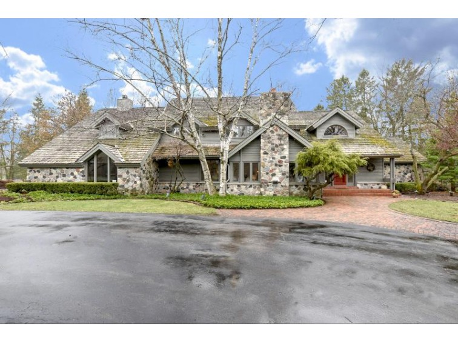

Sewart Real Estate Group is a top-performing home seller among First Weber Realtors, with consistent performance in the company's top 5% of MLS sales.
With 30+ years of experience in the Milwaukee North Shore and Ozaukee County real estate market, the team's knowledgeable, efficient, and exceptionally professional approach to residential home sales delivers accommodating and strategic pre-sale planning, beautiful staging and photography, and comprehensive marketing for faster returns on your investment and trust.
For buyers, we provide expert real estate consultation that helps you:
- Understand and navigate the home buying process, end-to-end
- Examine multiple neighborhoods and their advantages, holistically
- Envision and achieve goals for your new, ideal home
Learn why so many home sellers and buyers have trusted Sewart Real Estate Group to deliver exceptional results on their North Shore homes for sale, along with houses in Mequon, Shorewood, Whitefish Bay, and Ozaukee County - Contact us today.
Karine Sewart
Principal
With strong ties to the North Shore community where she was born and raised, Karine has led Sewart Real Estate for more than 13 years, taking the reins from her mother, Lisa, who founded the company 20 years prior. With a reputation as a keen negotiator, educated by the University of Wisconsin School of Business and Nicolet High School, she's delivered top sales performance among First Weber agents in Mequon, WI year after year - in between time spent with her husband, Steve, their three children, two dogs, and rounds of golf.
Shannon Harrigan
Operations Manager
Responsible for delivering more than $275 million in real estate revenue over nearly 20 years, Shannon found herself as a partner with Sewart Real Estate Group after more than a decade with leaders at Federated Realty in Shorewood, and other teams in the First Weber - Mequon office. Today, she is responsible for much of the team's business planning, management, and negotiation, with a speciality in luxury marketing and service.
Traci Kurtin
Agent
Traci brings more than 20 years of marketing, sales, and management experience to Sewart Real Estate Group, with an average of $4.5 million in revenue each year. Originally from Arizona, she, her husband, and four children now call Mequon home, where she serves on the Thiensville Education Foundation Board, and enjoys tennis, yoga, running, and skiing.
Stephanie Ciaccio
Agent
Stephanie is an Illinois transplant who has made Wisconsin her home for more than a decade. A long-time resident of Milwaukee's East-Side neighborhoods, Stephanie works with many of our buyers and sellers in between barre classes, cooking, and time with her family and dog, Winnie.
Karine Sewart
Principle
Born and raised in Mequon, WI, Karine has been selling homes in North Shore Milwaukee since 2002. Today, with the support of her team, Karine achieves an average of $25 million in residential property transfer each year. She is a fixture in her local community, where she volunteers for Habitat For Humanity, and Indian Hill Elementary School, attended by her three children.

MEQUON
2 bed / 4 bath / 2 half-bath
3131 W. Donges Bay Rd.
This is where the description of a home will go to describe why it's interesting and special,
and its relevancy to a specific kind of buyer. We'll link to specific blogs that describe why
it's valuable, and a sound investment, and throw in a few quips about its proximity to cool
amenities. The aim here is to show a seller why their home they want to sell is similar to
this one, and why it is we're the best seller for their particular kind of property.
SCHEDULE A SHOWING | VIEW FULL LISTING
MEQUON
2 bed / 4 bath / 2 half-bath
3131 W. Donges Bay Rd.
This is where the description of a home will go to describe why it's interesting and special,
and its relevancy to a specific kind of buyer. We'll link to specific blogs that describe why
it's valuable, and a sound investment, and throw in a few quips about its proximity to cool
amenities. The aim here is to show a seller why their home they want to sell is similar to
this one, and why it is we're the best seller for their particular kind of property.
SCHEDULE A SHOWING | VIEW FULL LISTING
MEQUON
2 bed / 4 bath / 2 half-bath
3131 W. Donges Bay Rd.
This is where the description of a home will go to describe why it's interesting and special,
and its relevancy to a specific kind of buyer. We'll link to specific blogs that describe why
it's valuable, and a sound investment, and throw in a few quips about its proximity to cool
amenities. The aim here is to show a seller why their home they want to sell is similar to
this one, and why it is we're the best seller for their particular kind of property.
SCHEDULE A SHOWING | VIEW FULL LISTING